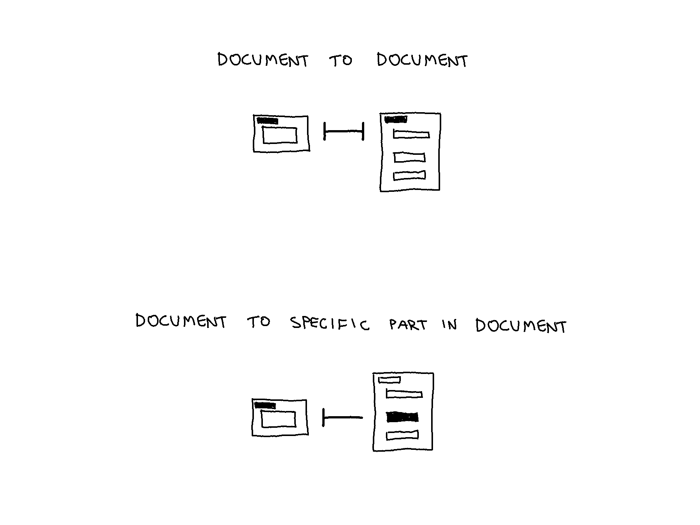
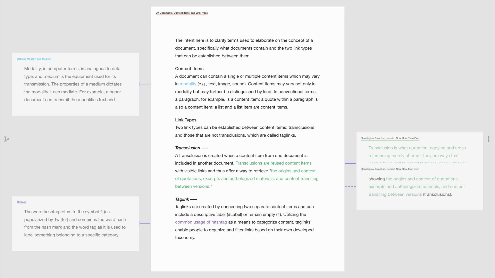
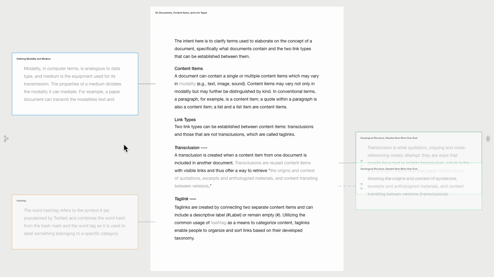
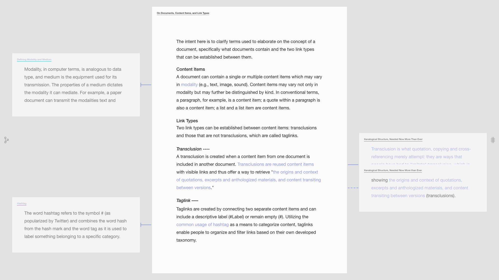
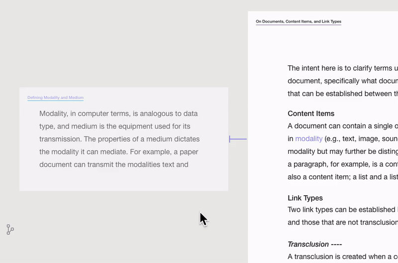
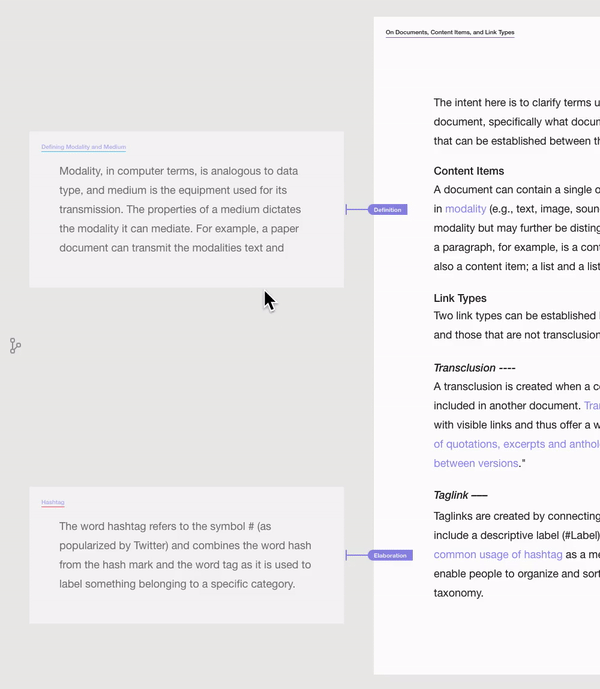
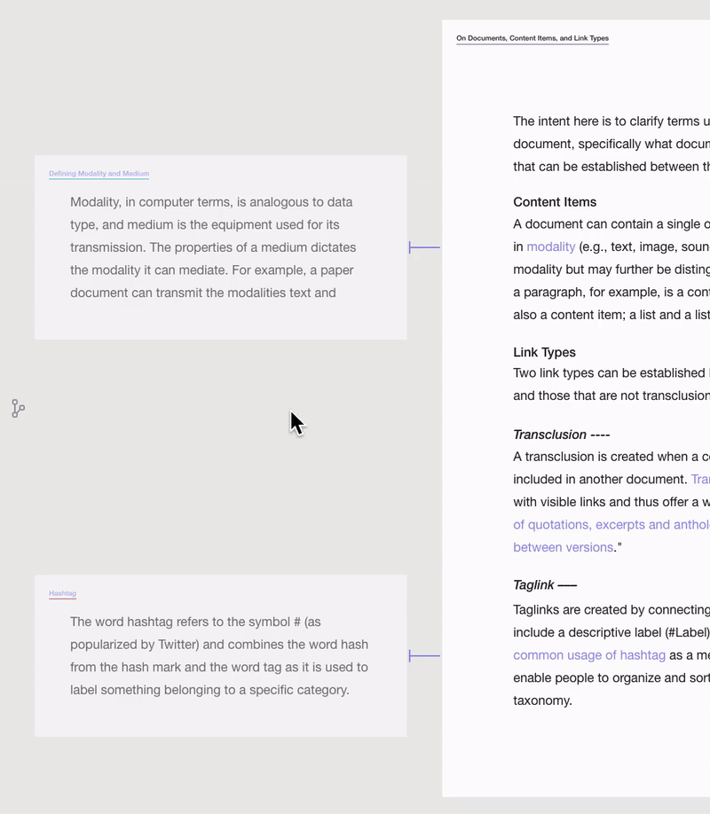
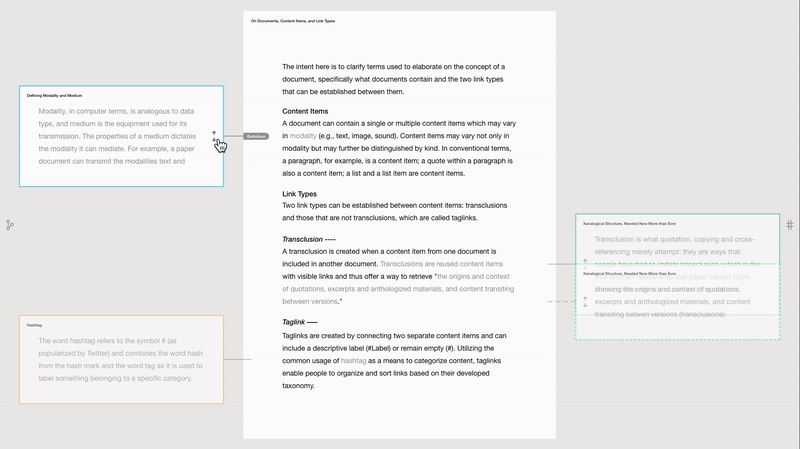

Prototype: Visually Distinguishing Links and Indicating Multiple Aliases of the Same Document
In this entry, the components of Lateral View are revised. The main challenges involve color coding and how cursor events change the display states of different categories of information. Those different categories of information are:
- Link endpoints: whether a link points to an entire document or a content item within a document.
- Multiple aliases of the same document.
- Link direction.
- Link type; whether it is a transclusion or tag link.
- Tag link labels.
Questions are:
- How should these components be visualized?
- When should these components be shown or hidden?
- How should these components animate between a shown and hidden state?
Link Endpoints
To distinguish between a link that points to an entire document or a content item within a document, the link’s endpoint is either bracketed or pointed, respectively. Additionally, if a link points to a content item within a document, the linked content is emphasized, and if a link points to an entire document, its title is emphasized. These distinctions are demonstrated in the image below.

Multiple Aliases of the Same Document
In designing Lateral View, one of the challenges is how to indicate that there are multiple aliases of the same document. Below are variations of applying a color code.
Verison 1
In version 1, linked content items share the same color.

In the top-left corner in the image above, the blue color-coding and shape of the link indicate that the word “modality” in the middle document is linked to the entire side document. In the bottom-right of the image, the green color coding and shape of the link indicate that only parts of each document are linked.1
Verison 2
A color-coded border around the side previews is applied in version 2, as seen in the image below. All linked content is gray, including the links.

Verison 3
A more subtle approach is taken in version 3, having underlined titles. Additionally, all linked content items are purple, while navigation icons remain gray, indicating two distinct categories of information.

Link Types
In the two images below, the version with the colored border is compared to the version with the underlined title. In both cases, the dashed line indicates a transclusion type link, and the solid line indicates a tag link.


Position and Visualization of Tag Link Labels
In the examples below, the tag link points from a particular content item of the open document (middle) to the entire side document. Specifically, the word modality is linked to the entire document titled Defining Modality and Medium. The direction of the tag link is visually indicated by the label Definition. The three images below show variations of the position of the label.

In the image above, while not hovering shows whether the link points to a particular content item within a document or the entire document. While hovering shows the label combined with the link direction.

In the image above, all information categories are shown while not hovering. Only the display state of the expand icon is toggled on the two different cursor events.

In the image above, while not hovering shows whether the link points to a particular content item within a document or the entire document, and while hovering hides the previous information and shows the label combined with the link direction.
Interactive Prototype
Discarded Attempts
As seen below, one of the problems with the color border is the awkward transition animation effects.

Other variations of the color-coding system are seen in the following images.

It may become distracting to have multiple colors throughout the main document. ↩